Steven is Born:
Steven Universe is born from the gem of Rose Quartz, who decides to give up her form in order to give birth to Steven. The leader of the Crystal Gems is assigned to Garnet, and Steven lives with Greg, his father.
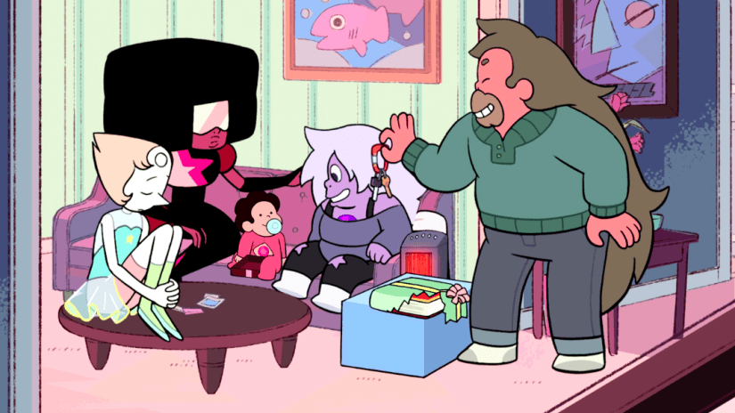Steven Universe is born from the gem of Rose Quartz, who decides to give up her form in order to give birth to Steven. The leader of the Crystal Gems is assigned to Garnet, and Steven lives with Greg, his father.
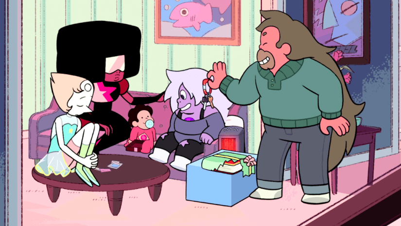Steven, at the age of 13, activates his powers for the first time, summoning it by eating a Cookie Kat, an ice cream. Also on this day, the Centipeedle is poofed and stored in the temple.
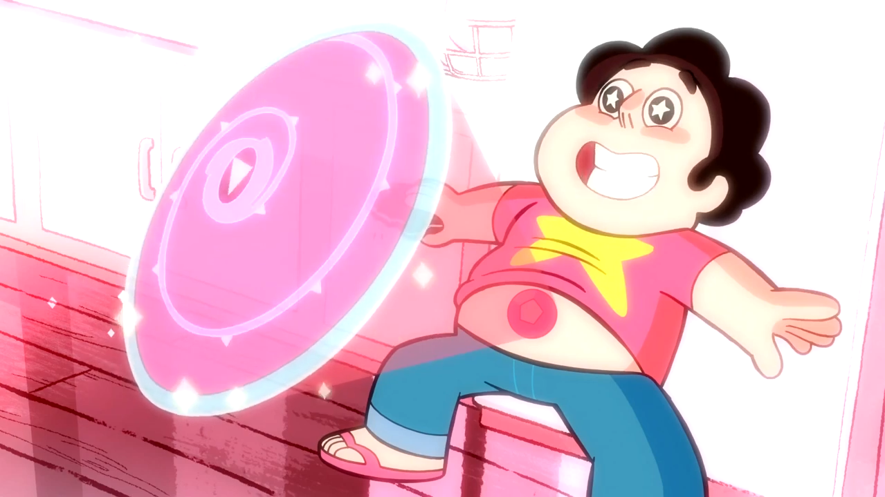Steven meets Connie for the first time, activating his second power, a Bubble Shield, to protect her, but preventing the two from escaping due to lack of knowing of how to remove the bubble. Together, they defeat the Worm Monster.
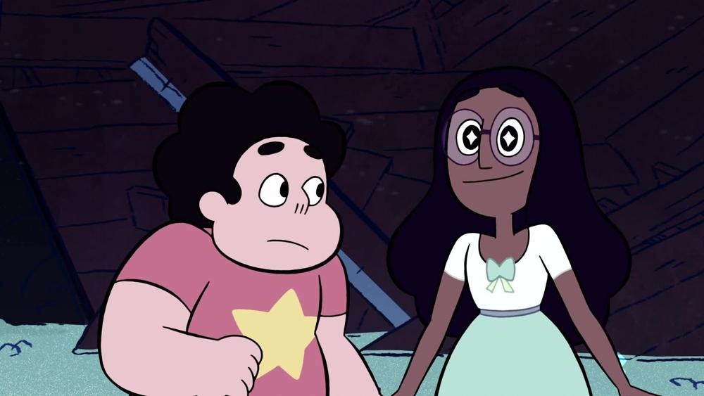Steven interacts with a mirror, which contains Lapis Lazuli. He releases her, but after she steals the oceans, the Crystal Gems go to retrieve it back. In the fight, Steven heals her gem with his healing powers, and she leaves to Homeworld.
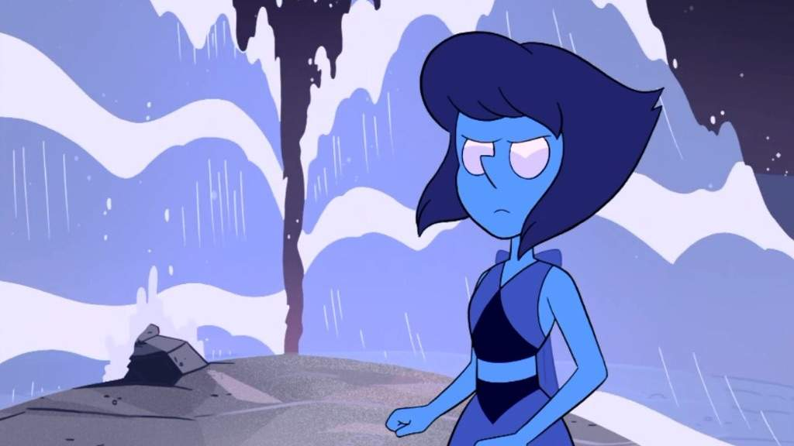One night, Steven and Connie dance together before unknowningly fusing together in their dancing. They create the fusion Stevonnie, who enjoy their night together in town.
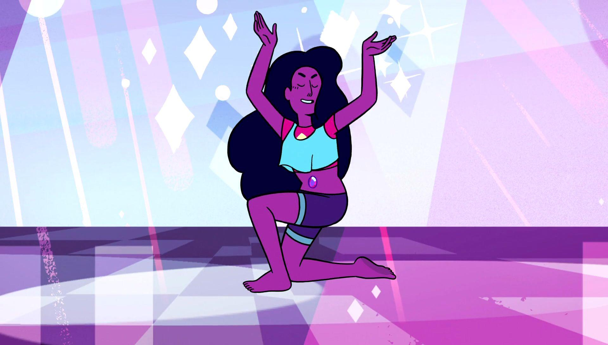Steven and the Crystal Gems meet against Jasper and Peridot, who are there to capture the Crystal Gems and send them to Homeworld. While the Crystal Gems are intially defeated, Steven frees himself and saves the Gems, destroying the ship and returning them to Beach City.
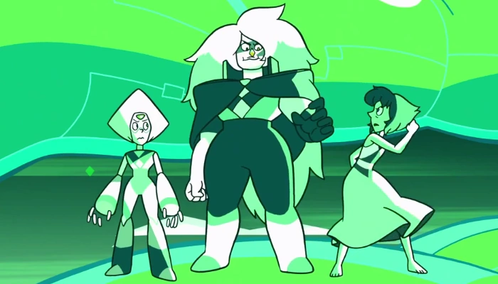Steven and a group of teenagers go out one night to have fun, and encounter Peridot's space pod. Steven activates it, and has fun with it. He accidently locks himself in when the Crystal Gems come, and the teenagers convince them that it is only Steven inside.
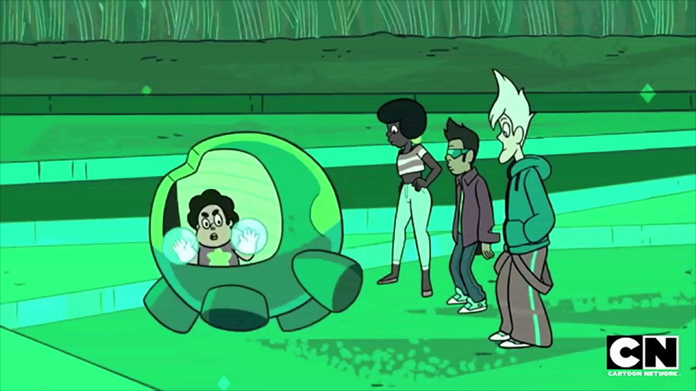Steven and the Crystal Gems meet against Peridot, this time managing to capture her and putting her gem within a bubble. She reveals a secret about the Earth before being poofed, but is ignored by everyone but Steven.
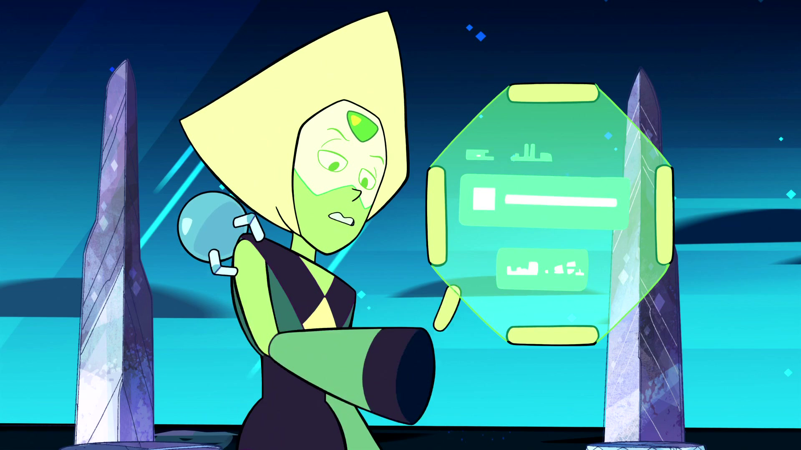Peridot is freed by Steven, and then after a brief scuttle, explains the Cluster. The Homeworld Weapon, if not contained/destroyed would destroy the Earth. The Crystal Gems work to tunnel to the center of the Earth to contain it.
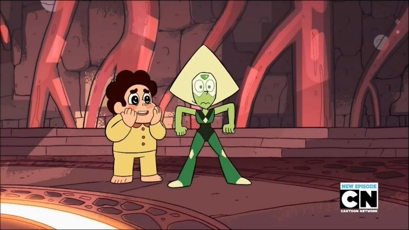Steven and Peridot head to the center of the Earth to deal with the Cluster, as a fight against Malachite leaves the Gems stranded. The original plan to destroy the Cluster is scrapped, and Steven instead chooses to bubble the entire Cluster.
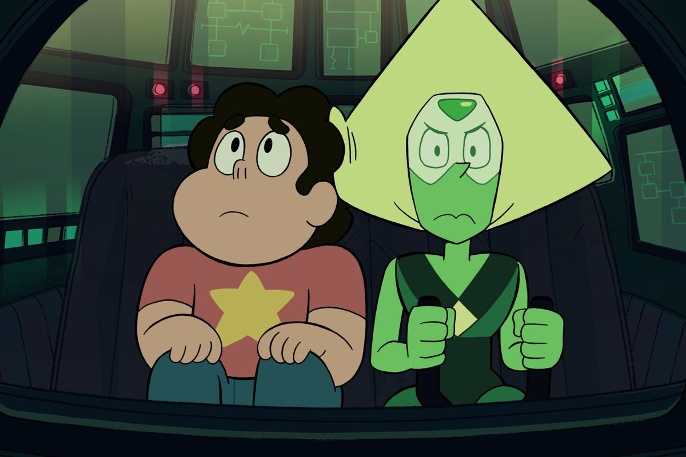Bismuth is accidently released by Steven in Lion's mane and gets to return to the Gems. She reveals the Breaking Point to Steven, but he chooses to destroy it and return Bismuth to a bubbled state.
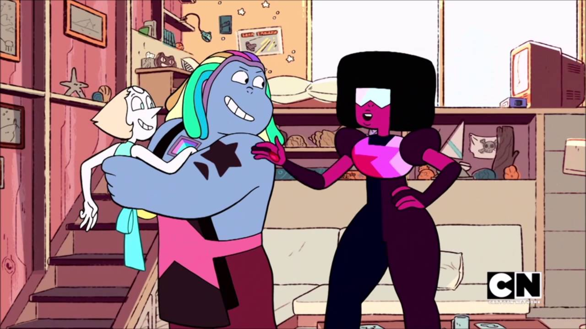